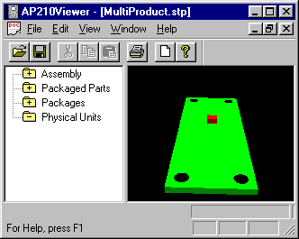

Filename:
MultiProduct.stp
Author:
Mike Keenan
Title:
Multiple PWAs
Design Source:
Annex K examples in AP210 IS document
Source Schema Date:
Mon Sep 4 18:51:43 EDT 2000
Validation Schema Date:
Mon Sep 4 18:51:43 EDT 2000
Conformance Class:
N/A
Recommended Practice Reference:
Translator:
N/A
PostProcessing:
Used StepMerge program to create a single part21 file from the two examples.
Test Purpose:
Test the results of giving a system a part21 file with two PWA assemblies in it.
Applicable Rules Clauses:
N/A
SEDS (Step Enhancement and Descripency System):
N/A
Description:
Contains two complete PWA assemblies.
Supporting Graphic:

Figure 1:AnnexK single component example
Testing History:
9/20/00 - AP210Viewer Version 1.2f Beta 1.0, displayed correctly the single component annexk example. No indication of another design in the file.
3/23/01 - AP210Viewer Version 1.2h, prompts the user with a list of designs in the
file and prompts the user to select which one to display. Each of the designs can be
displayed correctly.